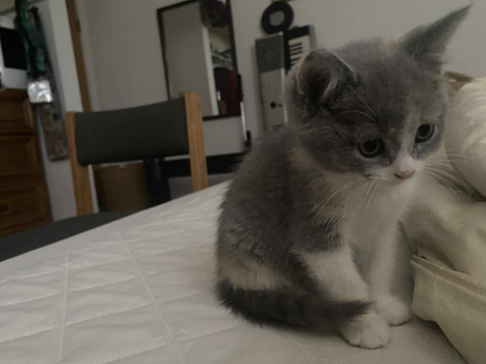
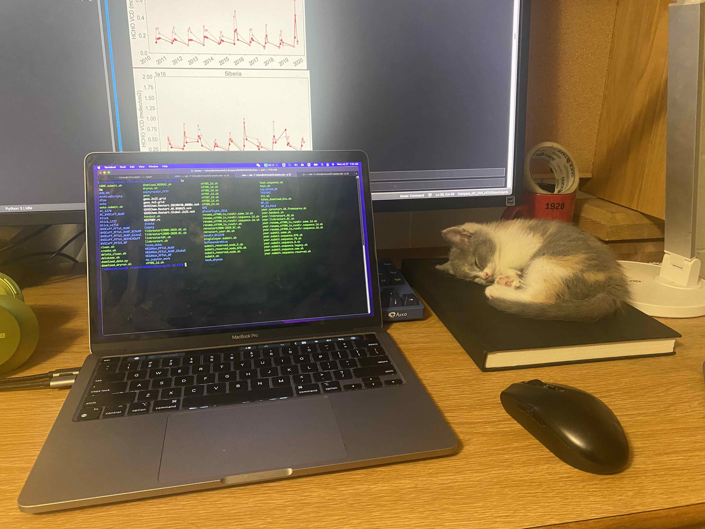

Socks是我PhD第四年开始养的猫。我其实刚来Alaska就想养猫了，我也上网去找了，但是也仅限于此。我觉得没有一些外力的推动，我很难去做一些以前想象不到的事。这次领养猫，主要多亏了在程奕添家里撸马里奥的猫，以及程奕添自己直接领养了一只猫回来。这让我看到了，其实领养一个猫没有什么难的。于是我也鼓起勇气领养了一只。
Socks是我临时起意要养。其实一开始我要领养的是一只4个月大的小猫Darpana，是一只花背白肚的狸花小母猫。因为在安克雷奇，当时我和foster商量好周末开车去，结果foster直接在周五就把猫送出去了。我非常生气，和foster大吵了一架（基本是我在骂她）。但是再怎么生气，Darpana也回不来了，我决定买一只猫，不要受foster或者shelter的气了。我和Satyaki一起开车去了Alaska南部的Kenai peninsula。在到达Anchorage的时候，我看了看shelter没有发现什么喜欢的猫，就直接在Alaskaslist上找了一个卖家Jessica。Jessica在卖他们家的两个月大的小猫，她还拍给我看小猫爸妈的照片。因为我想要很小的猫，这几个看起来也挺可爱的，我觉得就没必要多想了，于是当即就付了定金。回程的时候，我们一直开车到9点才到Wasilla，卖家就住在那里。Wasilla是大都市Anchorage北面的一个卫星城，Alaska第三大城市。我们七拐八拐终于到了她家，一个农村豪斯。进门后她家的小孩子都跑出来迎接，大概有五个孩子，大女儿和大儿子看上去上高中了，还有一个小男孩和两个小女孩应该是小学生。Socks和她姐姐就在沙发上玩（当时她还不叫Socks，）。我当时对着照片随便挑了一只，就是Socks，但是Socks其实没有她姐姐乖，我一抱起来就不停蹬腿。我又和Jessica聊了一会，拿上Jessica准备的猫妈味毯子和猫粮，准备带Socks走时，看到沙发上Socks的妈妈正在安静地给Socks舔毛洗脸，突然感觉很伤心，我把Socks带走了，妈妈该多难过呀。Socks似乎发现我们想抓他，于是就在客厅里跑酷起来，小女儿自告奋勇去抓小猫，因为Socks和她姐姐长得太像了，小孩就把两只小猫都抓来给我，一手提着一个，好像拎着两只狐獴，非常可爱。我们和Jessica一家告别后，又开了六小时车才到家。

Socks到我家已经接近3个月了，慢慢我们开始互相熟悉起来。刚来第一天一直躲在我书桌前面的狭缝里，但是第二天就开始出来跑酷了。Socks的好奇心非常非常重，整个房间的所有角落她都要了如指掌。我常想，我搞科研要是有这劲儿， 何愁没有好作品啊。Socks性格很好，除了不爱让人抱之外，算是一只亲人的小猫。让我很满意的是，Socks虽然经常跑酷，去一些我不想让她去的地方（比如窗帘，键盘，书桌后面），但是她从来不把我桌上窗台上的东西拨下来。Socks会用猫砂盆，从来不乱拉在别的地方，甚至会用身体护着猫砂盆禁止我铲屎。养了Socks一段时间之后，我有时候觉得Socks似乎不太聪明，有时候又觉得我低估了她的智商。叫她名字不回应就不提了，她似乎搞不清楚食物是从我这里来的。我把猫粮拿出来，她会来吃，但是我不拿出来，她也不问我，就在房里到处找。Socks很喜欢玩追逐游戏，经常无缘无故冲过来抓我一下然后开溜，挑逗我去抓她。逗猫棒也是她的心头好，我一开始买的一个羽毛逗猫棒，其实是模拟小鸟的，但是我不知道，一直在地上拖着逗她，那时候Socks很小，逗猫棒羽毛比她身子还大，搞得Socks很害怕，一直躲着逗猫棒，甚至还哈气。我于是折了房东的一支假花做逗猫棒，Socks每次看到这个假花都玩命地追，屡试不爽，一直到气喘吁吁为止。Socks为逗猫棒狂热到我每次想抓她抓不住，我就拿出逗猫棒一摇，她立马过来，然后被我抓住。好几次好几次，我觉得傻子都能反应过来逗猫棒是个诱饵了，Socks还是偏向虎口行。Socks似乎对吃的并不挑剔，但是也没发现她对吃的有什么偏好。给猫粮也吃，给罐头也不会非常兴奋。我买的冻干，打开来一股虾片的鲜香，人闻了都流口水，Socks却不为所动，给个面子还是吃了。

27岁第一次养动物，感觉太迟了，如果更年轻的时候能养个动物，那该多好。唉，人老了就开始怀念年轻的时候并后悔怎么XX没有早点做。改变自己的想法很重要。自己的想法到底怎么样不重要，自己的想法能引导自己做更多的事，给自己给周围人带来好处才重要。
猫咪比想象中干净很多，也聪明很多。动物通人性确实是真的，我以前一直以为动物就是活的机器人，对外界的刺激做出相应，并没有智商。直到接触了一些猫狗之后，才意识到原来狗是能听懂一些人话的，猫猫狗狗虽然有尖牙利齿和爪子，但是他们不会随便抓人咬人。